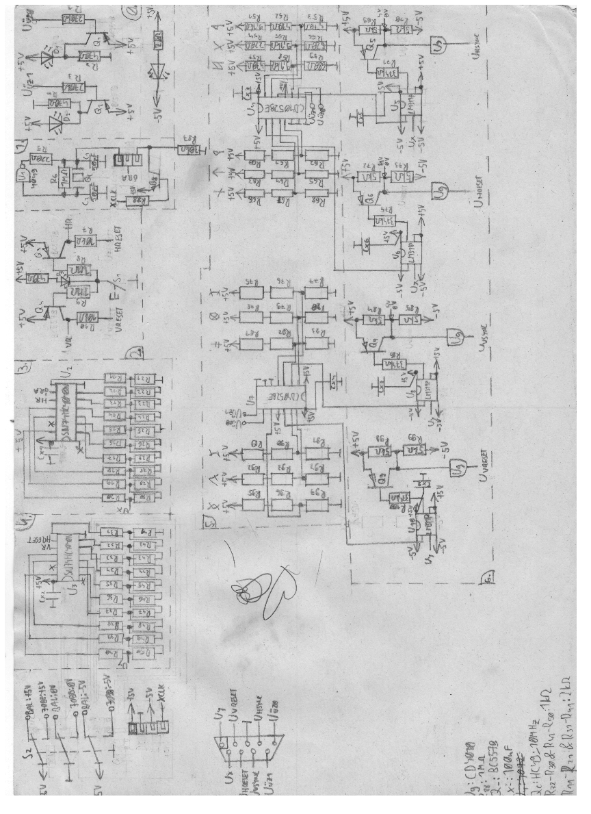
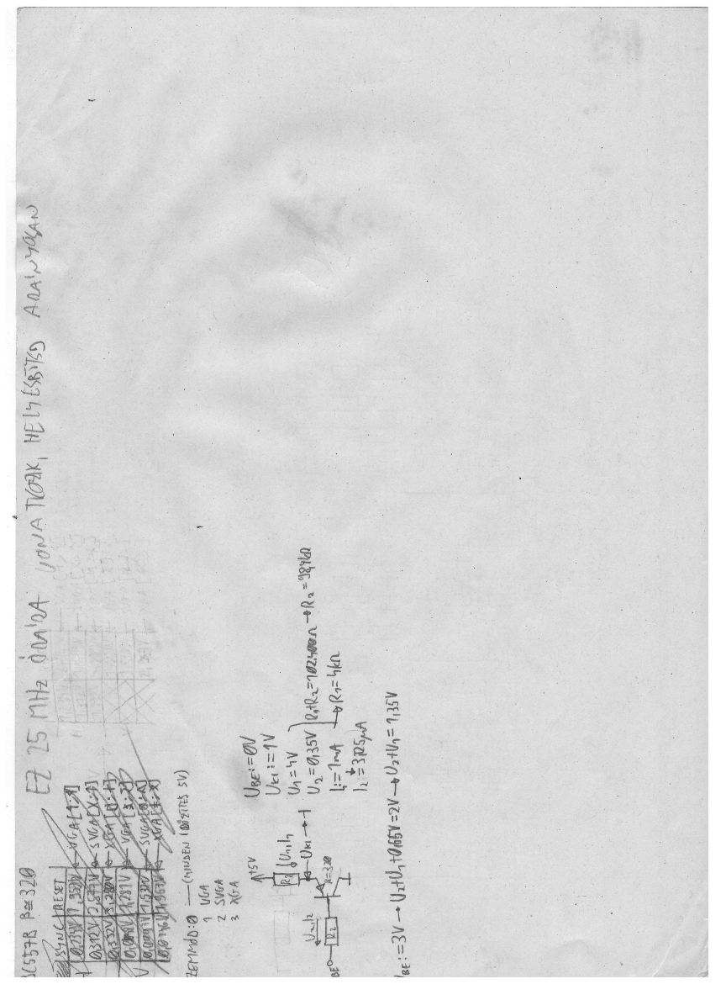

Na itt van az új kapcsolási rajz. Hazudtam, mert még nincs kész. Az időzítőellenállások értékei nincsenek meg teljesen; ami meg megvan, az mind-mind hibás, mert rosszul számoltam.

Kaptok egy betekintőt arról is, hogy a lap hátán mi folyik.

Elég gedvás a papír, azt bevallom. Azért szutykos mocskos lucskos, mert egyszer számítógépen Ket Márióztam (asszem) és a csuklóm alatt volt a papír, és hát összeizzadtam. Az elülső oldalon látható szívecske meg fasz meg ceruzavonás a testvérem műve. Annyira nincs kedvem most ehhez az egészhez.